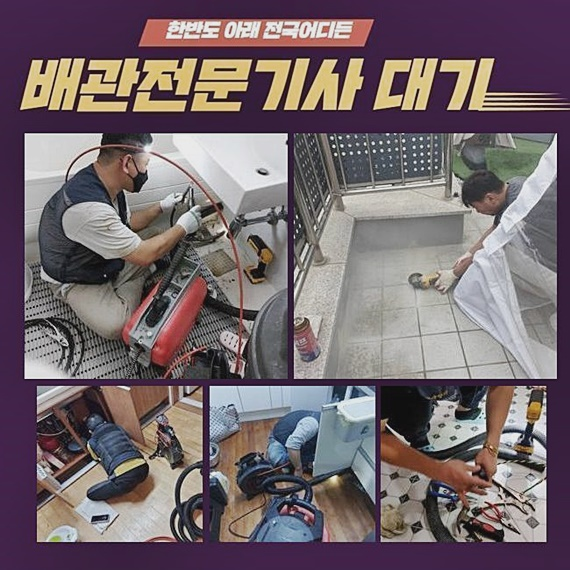
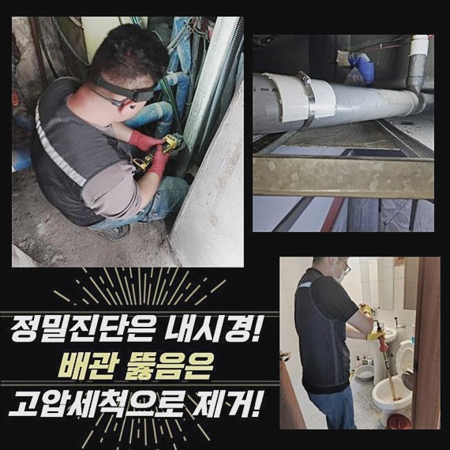
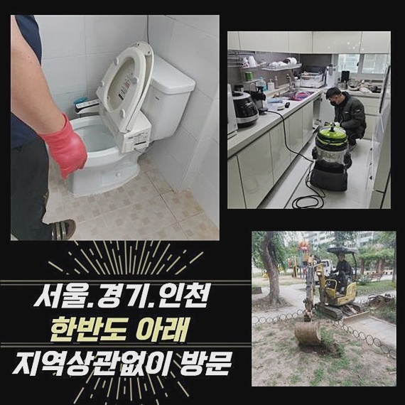
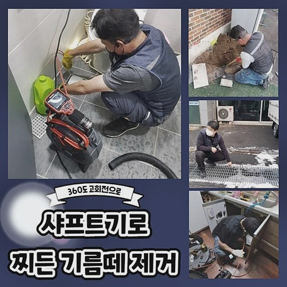
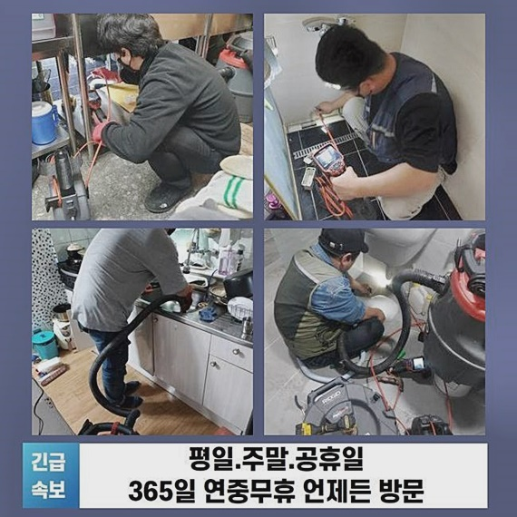
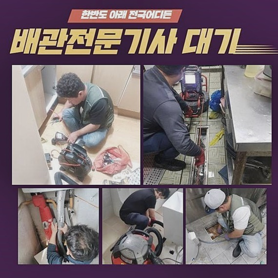
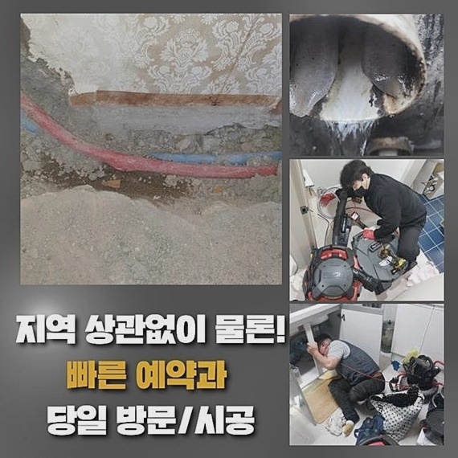

🏠 수원 팔달동싱크대역류 고등동 고압세척비용 배관막힘뚫는업체
수원 싱크대막힘 전문 시공 후기

📋 작업 개요
- 위치: 수원
- 서비스 유형: 싱크대막힘, 배관막힘, 역류해결, 뚫는업체, 배관청소, 고압세척, 악취차단
- 작업 일시: 2024. 9. 11. 18:27
- 업체명: 하수구수사대 (010-5615-2118)
🔍 문제 상황
수원 팔달동싱크대역류 고등동 고압세척비용 배관막힘뚫는업체
배수관에 이상징조가 시작된 경우라면 곧장 처리하는 것이 합당합니다
하지만 심각한 피해를 발생시키지 않을거란 생각으로 그냥 내버려두었다가 훼손범위가 증가하여서야 다급히 전문가를 찾는 정황이 80%이상이라고 안내드릴수 있겠습니다
지금은 저희팀이 시공한 배수관 장애 처소를 소개해 드리면서 해당 사태가 발현되었을때 어찌해서 신속하게 수선하는것이 생명인지에 대해서 친절히 말씀드리는 계기가 될수 있게끔 할것입니다
의뢰인의 전화를 받은후에 출동한 위치는 30가정 이상이 주거하고 있는 나홀로아파트였어요
의뢰자님께선 올해초부터 배수관으로 액체가 없어지는 빠르기가 확연하게 감소하였다고 말하셨어요
사용하다보면 자연적으로 해소될거라 여기고 별신경 쓰지않고 넘어가게 되었다고 하셨죠
그렇지만 막힘이 나아지지 않았고 도리어 동시적으로 다수의 세대원에게 피해상황이 생기면서 저희에게 다급히 의뢰해 주셨어요
구조물의 효용이나 목적성과는 무관하게 배수가 순탄히 진행되도록 여러종류의 배수관을 장치하게 됩니다
배관은 사람들이 사용한 탁수가 흘러나가는 길목역할을 맡고 있는데 단순하게 그것만 유입되는게 아니고 여러가지의 노폐물도 쉽게 섞이게 되죠

🔎 원인 분석
💡 전문가 진단: 정밀 진단 장비를 사용하여 슬러지의 고착 여부를 판명하고 타격/세척 작업을 실시했습니다.
해당 상황이 연속된다면 관 안쪽에 악영향을 주는 딱딱한 슬러지들이 지속 누적되면서 통수문제를 만드는 거죠
더욱이 공용관을 쓰신다면 각세대에서 나오는 대량의 이물들이 적체될 여지가 높기에 평상시의 보존노력이 필수라고 말씀드릴수 있죠
배수공쪽으로 흘러가는 슬러지들은 머리카락 및 기름슬러지가 대다수라 추정할 수 있어요
이러한 물질들은 난용성의 성격을 띠고 있어서 배수관 내부에 적층을 이루게 된다면 돌처럼 고착화되면서 점점 상황을 악화시키게 됩니다
이것은 물배출을 저해하는 요소로 작동하며 막힘은 말할것도 없고 심각한 경우에 물유출까지 동반판단내릴수 있습니다
이상황에서 관로 벽부위에 달라붙은 이물들은 습윤한 환경으로 인해 부패된다면 배수문으로 고약한 냄새가 퍼질수 있어요
느닷없이 샤워를 하는 도중 탁수가 소멸되는 속력이 내려갔거나 배수공으로 고린내가 감각되는 경우라면 배수관 차단이 심화되었다는 시그널이라 볼 수 있어요
이것을 쉽게 넘기는 것보단 골치아픈 형국이 되었다는 점을 받아들이고 바로 합당한 도구들과 실력을 가진 기술자에게 의뢰하여 근본적인 문제 확인을 진행해야 마땅합니다
온수를 여러차례 흘려보거나 기다란 막대기 등으로 잠깐 사태를 둔화시킬 가능성은 있지만 완전한 해결방안은 될수 없다는 사실을 알려드립니다
의뢰인의 세대에 당도하고 막힘이 일어난 지점에서 총체적인 형편을 관측해 보았는데요
기본적인 물빼기 검열을 진행하였는데도 아주 느리게 내려가는 형편을 목견하게 되었어요

🔧 작업 과정
그리고 간헐적으로 역류가 발발하는 모양새까지 있었죠
해당 상황에선 배수관 밑부분부터 잔재들이 뭉쳐있을 가망성이 커서 계획없이 세척기를 통해 청소에 나서는 것보단 배관카메라 등의 장치를 사용해서 문제의 근원을 신속히 알아내는게 좋아요
내시경설비는 직관이 힘든 곳까지 들어가 뚜렷하게 관로의 모습을 간파하게 해주는데요
배관카메라와 이어진 브라운관을 지켜보면서 살뜰하게 검정했더니 중앙의 파이프를 기점으로 꺾인 관로에까지 슬러지가 축적된 정황을 발견하였어요
간소한 장비사용만으로도 한참을 하수관 청소를 안하였다는 사실을 알아차릴수 있었죠
이것이 지속된다면 관로에 균열이 일어날수가 있어서 2차피해상황도 걱정된 것이 사실이예요
단단해진 고형물들로 막힘이 발발했으므로 보편적 기계들을 가동하지 않고 고압물세정 방식을 토대로 시공하는 것이 옳게 보였답니다
고압물청소는 견고하게 만들어진 호스줄을 넣어서 고속으로 배관에 분사하는 방안입니다
기름기가 끼고 고착화된 슬러지들까지 깨끗이 없애는 결과물을 목견하실 수 있답니다
정례적으로 배수관관리를 실시하신다면 상시적으로 배수관을 청결히 보존하게 되면서 배관정체와 관련한 고민을 예방할수 있어요
여러명이 생활하는 주거지에서 배수 트러블이 자주 나타나는 상황이라면 충분한 경험을 가진 기술자에게 문의하여 일년에 한두번 정기적 관리를 감행하는것이 합당한 대책이 될수 있겠죠
작업이 원활하게 성립되기 위해 분쇄기계를 사용해서 배관 중반에 누적된 이물들을 소멸시켜 침체된 국면을 다소나마 해결해야 하죠
샤프트기기는 첨단 제품 중 하나로서 무겁지 않다는 장점이 있으며 다목적으로 적용가능하며 노커에 커팅 팁이 들어있어서 관에 스크래치가 안나게 하면서 대다수의 찌꺼기를 제거볼수 있어요
침전물 등을 분쇄하는 공정이 마무리되면 여기저기에 목도되었던 막힘이 해소되는 현상을 목격하게 된답니다
다음은 바깥으로 위치를 변경해서 곧장 물세척 기구를 준비하면 돼요
물세척을 시행할때는 유념할 것이 존재하는데요


✅ 작업 완료
관로 곳곳을 청소하는 방식인 만큼 파이프 훼손을 만들 가망성이 높아 세부적으로 구분하여 가압할 필요가 있다는 것이예요
저흰 세정을 도모할 시기에는 배수 및 설비 구조를 꼼꼼하게 조사하여 대략적인 문제점을 온당하게 헤아리고 본격적인 공정에 돌입합니다
파이프의 길이 등에 의거하여 방법을 상이하게 하여서 소청을 실시하면 오랫동안 축적된 노폐물들을 속시원히 정리할수 있어요
물막힘 현상은 사용이 계속되면서 손상이 증가하기 쉬워서 약간만이라도 막힘이 시작된 경우라면 신속히 대응해 나갈 필요가 있답니다
최첨단 기기와 기술력을 만족하는 우리팀과 막힘상황을 순탄하게 없애고자 한다면 망설이지 말고 빠르게 의뢰 부탁드려요




⚠️ 주방 싱크대 배관 막힘 예방 수칙
- ✅ 기름기가 묻은 식기나 프라이팬은 설거지 전 키친타올로 반드시 기름때를 닦아내세요.
- ✅ 주기적으로 싱크대 개수대에 뜨거운 물을 가득 받아 한 번에 내려 배관 내부 기름을 씻어내세요.
- ✅ 배수구 거름망을 미세한 필터로 사용하시고 음식물 찌꺼기가 틈으로 새어 들지 않게 관리하세요.
- ✅ 베이킹소다와 식초를 뜨거운 물과 함께 일주일에 한 번씩 부어주면 배관 살균과 막힘 예방에 좋습니다.
💡 핵심 정리
- 확실한 장비 작업(내시경 점검 및 샤프트 스케일링)으로 원인을 뿌리 뽑습니다.
- 작업 후 1년 이내에 동일한 부위 재발 시 100% 무상 A/S 서비스를 보장합니다.
- 서울 · 경기 · 인천 전 지역에 24시간 언제든 긴급 출동할 수 있도록 항시 대기 중입니다.
❓ 자주 묻는 질문 (FAQ)
🚨 수원 싱크대막힘 문제로 고민이신가요?
정확한 원인 진단과 확실한 시공으로 재발 없는 해결을 약속드립니다.
24시간 긴급 출동 | 서울 · 경기 · 인천 전지역 | 1년 내 재발 시 무상 A/S